Deep learning with Cortex
Kiran Karkera
Datacraft Sciences
Outline
Context: Clojure, Cortex, Machine Learning
Overview of Cortex
How to build a network in Cortex
Recipes for working with Cortex
Context
Machine learning/data science is an overloaded term
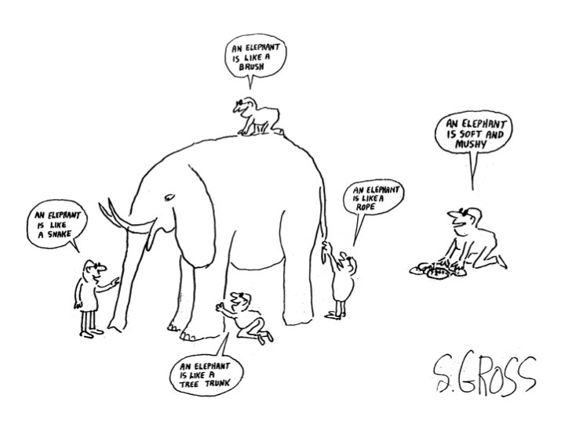
Estimation vs Prediction
Estimation: coming up with values of unknown parameters (in a model)
Prediction: focused on accuracy (and other metrics) of model.
Research vs production use
Exploration (given a dataset, train a classifier, produce a report)
Production (putting a trained model into a production environment)
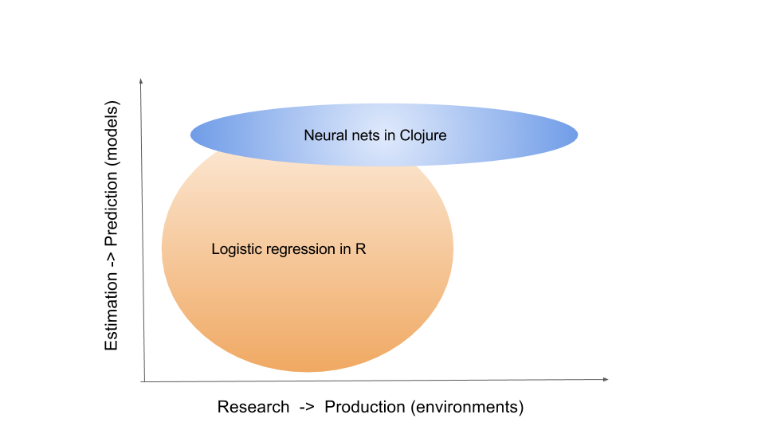
Why use Clojure for Machine Learning?
Perception that languages like R/Python are ideal for machine learning.

Figure 3: Popularity of languages used in ML
Data extraction and cleaning takes upto 80% of the time
Clojure is great at data manipulation
Low impedance transition to production
| Library | Niche |
| Gorilla-repl | Notebooks/visualization |
| Storm | Stream processing |
| Onyx | Stream Processing |
| Sparkling/Flambo | Distributed jobs on Spark |
| Datomic | Supports "time travel" over database history |
Machine Learning Digression
Supervised Classification:

Why are Neural Networks popular for classification?
State of the art performance
One of the early successes(1992) for neural nets was reading the zip code in postal mail.

99.81% accuracy on MNIST, close to or better than human performance
Dataset called MNIST is a benchmark dataset in machine learning
Flexibility
NNs can accommodate several outputs:
Single target classification (e.g. Spam classification)
Multi target classification (e.g multiple objects in an image)
Classifying aspects of human faces such as gender, age, type of expression and skin colour
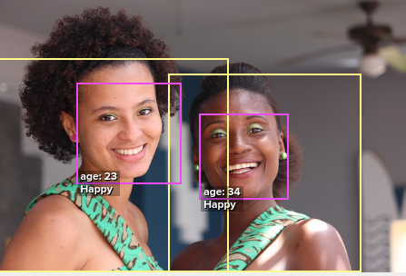
Composable abstractions
Different layers can be combined in a modular fashion and computations are straightforward
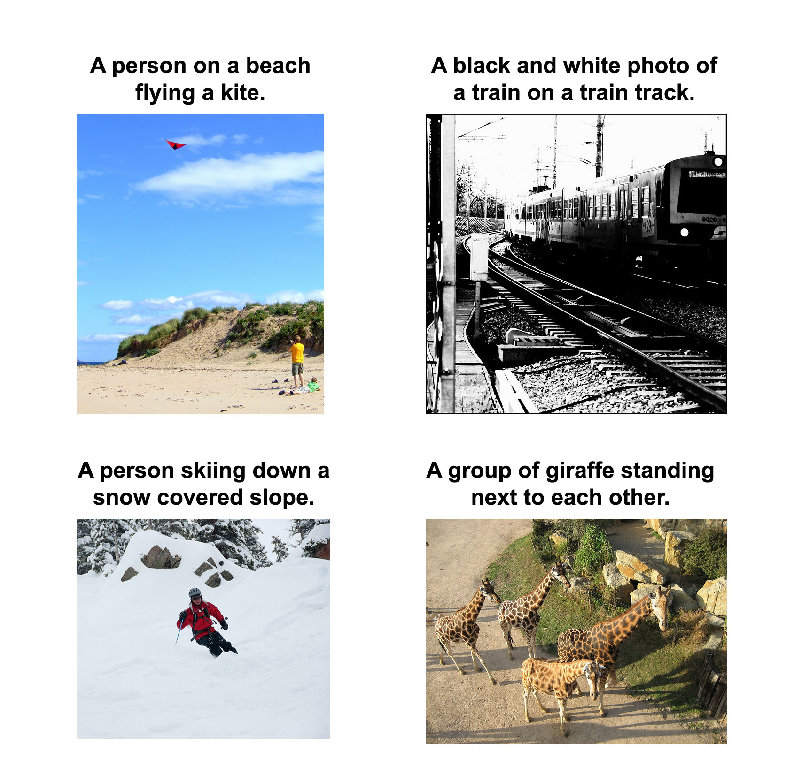
Figure 7: im2txt network provides descriptions of images
Features of Cortex
Deep learning library written in Clojure
Data centric interface
Performant, Memory efficient training on GPUs
Low LOC count
Supports Convolutional NNs (image processing)
Partial support for ingesting pre-trained networks
Compute Abstraction
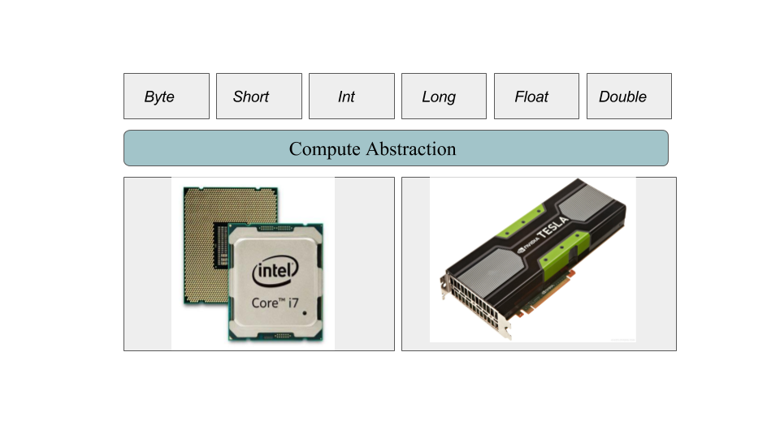
Design goal
Enables some level of shared implementation between a Cpu, Cuda, OpenCL
Targets environments where there is a distinct transfer step from host to device
Primitives include operations such as:
Initializing buffers
Transfer of data between the host and device
Overlapping transfer with device compute using multiple 'streams' of execution.
Training with Cortex
Predicting office room occupancy
Train with 8k instances from room occupancy dataset
Contains measurements of light, temperature, humidity and CO2 of an office room.
Goal is to predict when the room is occupied.
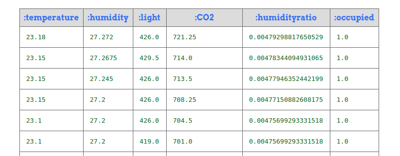
Data ingestion
(def data-vectors (->> "resources/occupancy/datatraining.csv" (slurp) ;; parse lines )) (take 2 data-vectors)
([23.18 27.272 426.0 721.25 0.00479298817650529 1.0] [23.15 27.2675 429.5 714.0 0.00478344094931065 1.0])
Create training data format
(defn make-feature-vec [data-vectors] (->> data-vectors (mapv (fn[m] {:data (-> m butlast vec) :labels (-> m last vector)})) shuffle)) (->> (make-feature-vec data-vectors) (take 2))
({:data [22.15 27.245 0.0 586.5 0.0044959713579516], :labels [0.0]} {:data [20.89 23.445 0.0 450.5 0.00357640828064061], :labels [1.0]})
Split the data into train and test
(def train-test-ds (let [ds (make-feature-vec data-vectors) ds-count (count ds) ;;do a 90-10 split into train/test cutoff (int (* 0.9 ds-count)) train-ds (take cutoff ds) test-ds (drop cutoff ds)] [train-ds test-ds]))
Define the layers
Network is defined as a vector of layers
Input layer take 3 arguments, the x y z dimensions of the input cube
Specify the input against the :id key
;;input layer for an image of size 28 (length) x 28 (breadth) x 3 (depth) (layers/input 28 28 3 :id :data) ;;input layer for room occupancy is 5(inputs) x 1 x 1 (layers/input 5 1 1 :id :data)
;;data instance {:data [22.15 27.245 0.0 586.5 0.0044959713579516], :labels [0.0]}
Network definition
(def description [(layers/input 5 1 1 :id :data) (layers/batch-normalization) (layers/linear 1) (layers/logistic :id :labels)])
Training
Train it for 10 epochs
One epoch == One pass on the dataset
(def trained-occupancy-net (let [[train-ds test-ds] train-test-ds] (train-n description train-ds test-ds ;;run for 10 training epochs :epoch-count 10 )))
| :type | :value | :lambda | :node-id | :argument | |-----------+---------------------+---------+----------+-----------| | :mse-loss | 0.03046061750823965 | 1.0 | :labels | | Loss for epoch 10: (current) 0.03046062 (best) 0.03308501 [new best]
Evaluate results
Evaluate the accuracy (and other metrics) on the test set
[(accuracy actual predicted) (f1-score actual predicted 1.0)]
[0.9447852760736196 0.8888888888888891]
Backpropagation
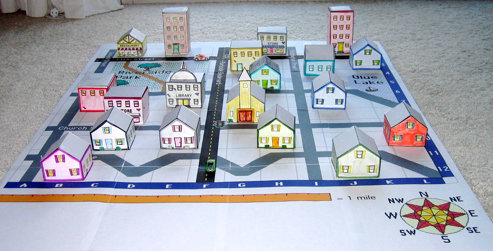
Artifacts
Layers
Parameters
Forward pass
Backward pass
Accuracy / Loss function
Gradient
How to train neural networks (theory)
(Learn by) writing a toy implementation of back propagation
Stack up layers
Sip your coffee and watch the loss function decrease
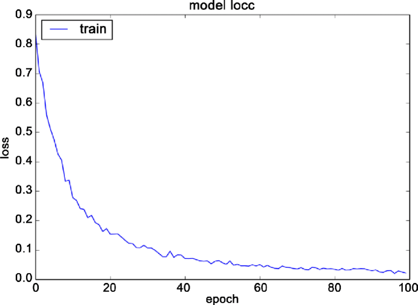
Reality
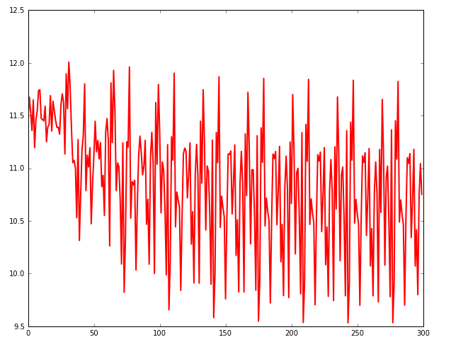
Figure 12: A heart rate or a loss function? :)
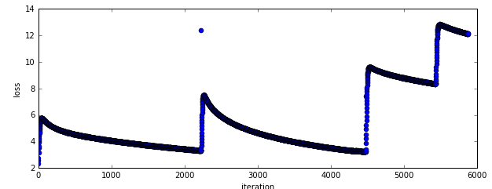
Figure 13: Evades diagnosis
Check out this page for artistic loss functions

" The problem with Backpropagation is that it is a leaky abstraction." -Andrej Karpathy
Cortex Recipes
"Easy things should be easy, and hard things should be possible" Larry Wall
Pre-training exploration
Network structure for occupancy network
(def description [(layers/input 5 1 1 :id :data) (layers/batch-normalization) (layers/linear 1) (layers/logistic :id :labels)]) ;;create the network (def occupancy-net (network/linear-network description)) ;;print a layer summary (network/print-layer-summary occupancy-net (traverse/training-traversal occupancy-net))
| type | input | output | :bias | :means | :scale | :variances | :weights |
|---|---|---|---|---|---|---|---|
| :batch-normalization | 1x1x5 - 5 | 1x1x5 - 5 | [5] | [5] | [5] | [5] | |
| :linear | 1x1x5 - 5 | 1x1x1 - 1 | [1] | [1 5] | |||
| :logistic | 1x1x1 - 1 | 1x1x1 - 1 |
Parameter count: 26
(defn mnist-initial-description [input-w input-h num-classes] [(layers/input input-w input-h 1 :id :data) (layers/convolutional 5 0 1 20) (layers/max-pooling 2 0 2) (layers/relu) (layers/convolutional 5 0 1 50) (layers/max-pooling 2 0 2) (layers/batch-normalization) (layers/linear 1000) (layers/relu :center-loss {:label-indexes {:stream :labels} :label-inverse-counts {:stream :labels} :labels {:stream :labels} :alpha 0.9 :lambda 1e-4}) (layers/dropout 0.5) (layers/linear num-classes) (layers/softmax :id :labels)]) ;;create the network to accept 28 x 28 pixel inputs, ;;10 targets/labels (one each for digits 0-9) (def mnist (mnist-initial-description 28 28 10)) (network/print-layer-summary mnist-net (traverse/training-traversal mnist-net))
| type | input | output | :bias | :weights |
|---|---|---|---|---|
| :convolutional | 1x28x28 - 784 | 20x24x24 - 11520 | [20] | [20 25] |
| :max-pooling | 20x24x24 - 11520 | 20x12x12 - 2880 | ||
| :relu | 20x12x12 - 2880 | 20x12x12 - 2880 | ||
| :convolutional | 20x12x12 - 2880 | 50x8x8 - 3200 | [50] | [50 500] |
| :max-pooling | 50x8x8 - 3200 | 50x4x4 - 800 | ||
| :batch-normalization | 50x4x4 - 800 | 50x4x4 - 800 | [800] |
Part 2
| type | input | output | :bias | :weights |
|---|---|---|---|---|
| :linear | 50x4x4 - 800 | 1x1x1000 - 1000 | [1000] | [1000 800] |
| :relu | 1x1x1000 - 1000 | 1x1x1000 - 1000 | ||
| :dropout | 1x1x1000 - 1000 | 1x1x1000 - 1000 | ||
| :linear | 1x1x1000 - 1000 | 1x1x10 - 10 | [10] | [10 1000] |
| :softmax | 1x1x10 - 10 | 1x1x10 - 10 |
Parameter count: 849780
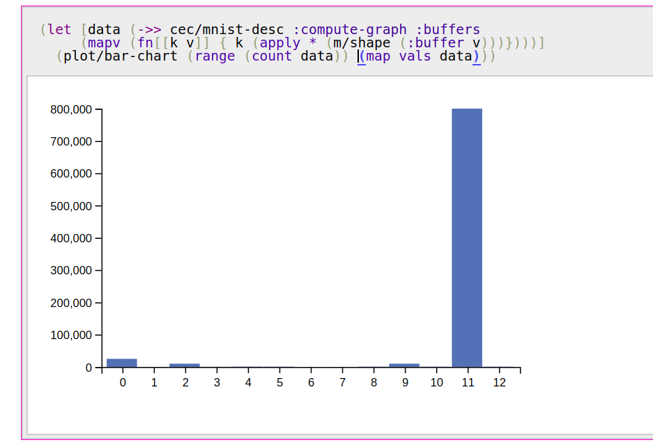
Data-> Data transformations for building a networks
Networks are built by successively adding maps of maps.
In the first stage network/linear-network creates a computation graph which specifies
Nodes (a map of layers keyed by name)
Edges (connections between layers)
Buffers (weights and other parameters)
Streams (input and output data)
Query the layers:
(-> occupancy-net :compute-graph :nodes keys) ;; ;;(:data :batch-normalization-1 :linear-1 :labels :mse-loss-1)
(-> occupancy-net :compute-graph :edges) ;; ;;([:data :batch-normalization-1] [:batch-normalization-1 :linear-1] ;; [:linear-1 :labels] [:labels :mse-loss-1])
Explore what each layer does
Exploring the Swish activation function
(def desc [(layers/input 1 1 1 :id :data) (layers/swish 1 :weights [[1.0]]) (layers/logistic :id :labels)]) (def inet (-> desc network/linear-network ))
Net Surgery
Remove the last layer (logistic) and pass a range of inputs (-1 to 1)
(execute/run (network/dissoc-layers-from-network inet :labels) input-data)
Compare Swish with Tanh and Logistic layers
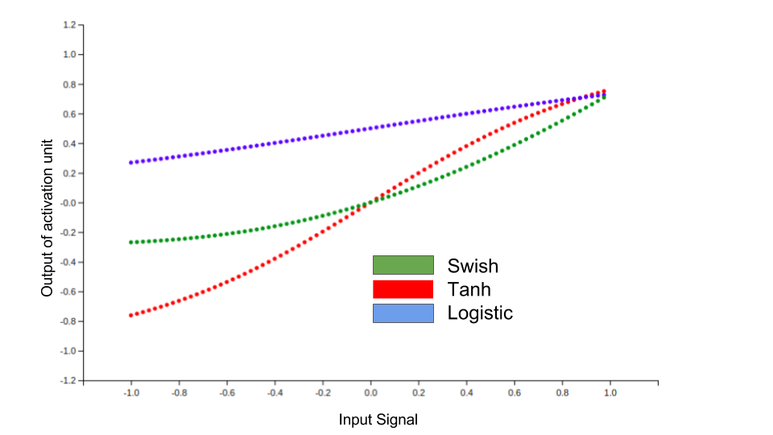
While-training checks
Training is reducing over sequences
Train and test datasets are infinite sequences
(def trained-net (let [[train-ds test-ds] (get-ds) train-fn #(etrain/train-n % train-ds test-ds)] (->> network (iterate train-fn) (take 10))))
Returns a sequence with 10 iterations of trained network
(->> trained-net (mapv :cv-loss)) ;; ;;[nil 2.2406814049004633 ;; 2.1851172560486454 2.1851172560486454 ;; 2.1851172560486454 2.1822464148167136 ;; 2.1734111466403503 2.1614423794394315 ;; 2.1614423794394315 2.1614423794394315]
Check how weights change over epochs
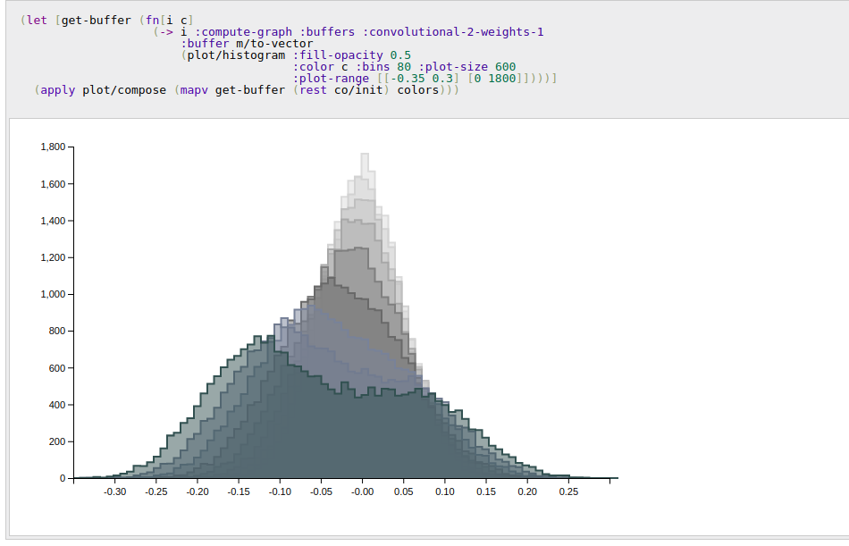
Figure 17: Convolution layer weights
Listeners
To watch progress of the loss function
Save the best model/kill training
Observe images being classified
Default listener
Live updates on a local webserver
Creates images from training instances to observe training progress
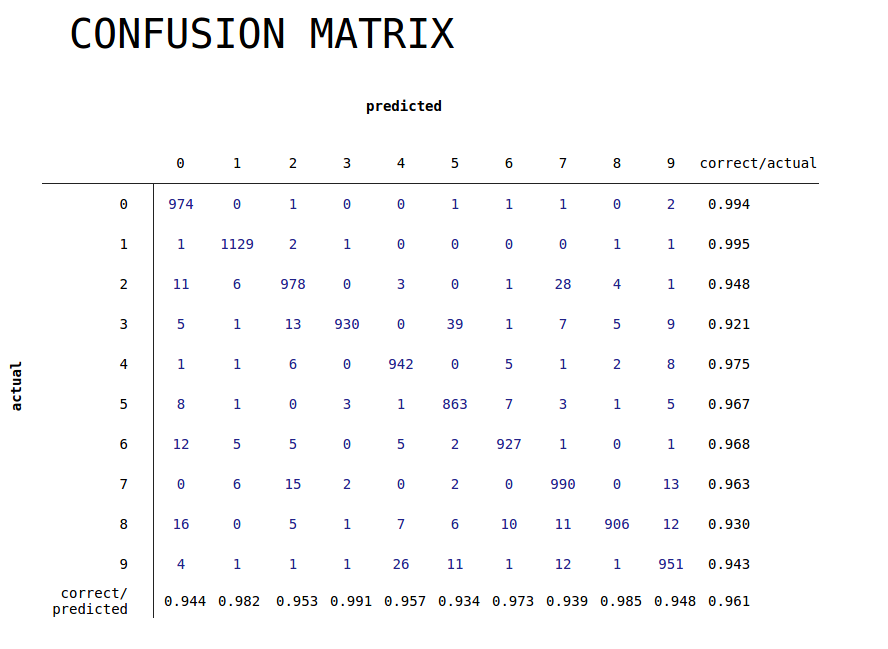
Figure 18: Confusion matrix
Digression: Tensorboard
Tensorboard is a suite of visualization tools to understand, debug and optimize Tensorflow
Users can view plots of
- Scalar metrics such as Accuracy/ error / F1 score
- Tensor metrics such as weights, biases
- Histograms of metric's progressions over time.
Tensorboard listener
Listen for Cortex events and convert it to Tensorboard compatible events
Out of the box support for
- train loss and cross validation loss
- weight and bias histograms
(:require [cortex.experiment.classification :as cls]) (cls/create-tensorboard-listener ;;file name should include "tfevents" {:file-path "/tmp/tflogs/linear/tfevents.linear.out"}) ;;launch tensorboard with log path ;;tensorboard --logdir=/tmp/tflogs
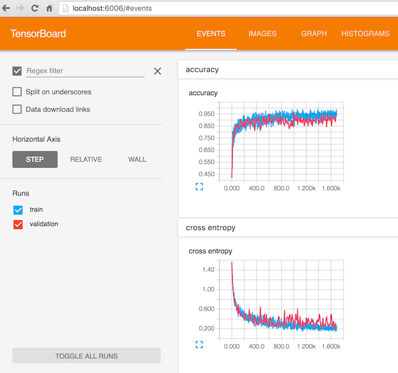
Figure 19: Tensorboard scalar metrics
Summary
What Cortex needs contributions on
Support for Recurrent networks (e.g. text)
Java based alternative is Deeplearning4j
Recent network structures (e.g. Inception / Capsule networks).
Ingesting pre-trained networks
Automatic differentiation
Thanks
Chris Nuernberger and the Thinktopic team
Mike Anderson